メール受信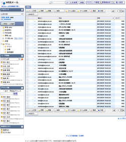
メール検索
メール新規作成
メール詳細
管理者設定メニュー
アカウントマネージャー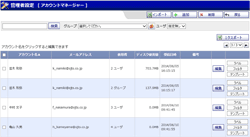
個人設定アカウント新規登録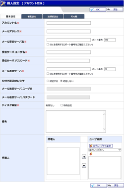
管理者設定アカウント新規登録
個人設定アカウント編集
管理者設定アカウント編集
個人設定アカウント新規登録確認
管理者設定アカウント新規登録確認
個人設定アカウント編集確認
管理者設定アカウント編集確認
管理者設定 ラベル管理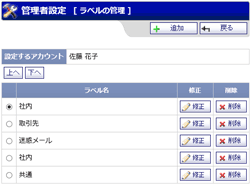
管理者設定 ラベル登録
管理者設定 ラベル登録確認
管理者設定 フィルタ管理
管理者設定 フィルタ登録
管理者設定 フィルタ登録確認
自動削除設定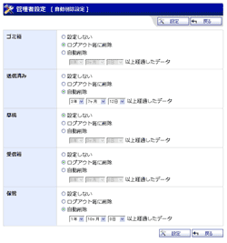
自動削除設定確認
手動データ削除
手動データ削除確認
送受信ログ管理
統計情報
予約送信メール管理
予約送信メール取消確認
個人設定メニュー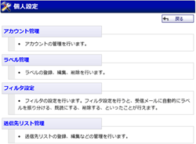
アカウントの管理
ラベルの管理
ラベル登録
ラベル登録確認
フィルタ設定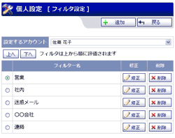
フィルタ登録
フィルタ登録確認
アカウント基本設定
アカウント基本設定確認
アカウントインポート
アカウントインポート確認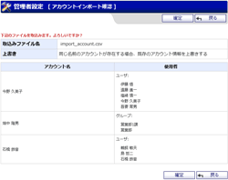
送受信ログ自動削除設定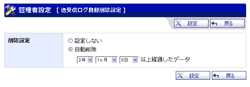
送受信ログ自動削除設定確認
送受信ログ手動削除
送受信ログ手動削除確認
アカウント編集
アカウント編集確認
管理者設定 メールテンプレート管理(共通)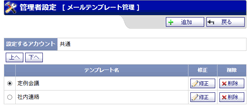
管理者設定 メールテンプレート管理
個人設定 メールテンプレート管理
管理者設定 メールテンプレート登録(共通)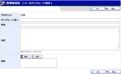
管理者設定 メールテンプレート登録確認(共通)
管理者設定 メールテンプレート登録
管理者設定 メールテンプレート登録確認
個人設定 メールテンプレート登録
個人設定 メールテンプレート登録確認
管理者設定 送信先リスト管理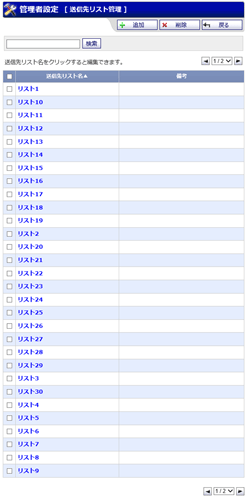
管理者設定 送信先リスト登録
管理者設定 送信先リスト登録確認
管理者設定 送信先リスト編集
管理者設定 送信先リスト編集確認